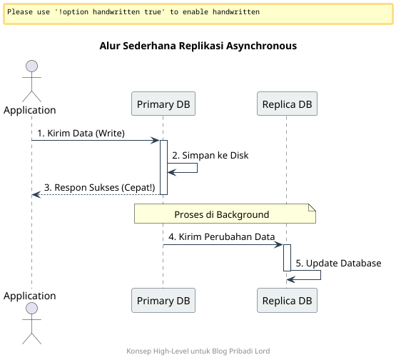

Replikasi database adalah salah satu pilar utama dalam membangun sistem yang memiliki ketersediaan tinggi (High Availability). Artikel ini akan membahas secara konseptual bagaimana Streaming Replication dengan mode Asynchronous bekerja, terutama dalam lingkungan yang menggunakan Docker.
1. Arsitektur Replikasi Asynchronous
Dalam model asynchronous, kita memprioritaskan performa tulis (write performance) pada server utama agar aplikasi tetap responsif.
- Primary (Master): Server utama untuk operasi tulis dan baca. Ketika terjadi transaksi, server akan langsung melakukan commit sukses tanpa menunggu konfirmasi dari server replika.
- Standby (Replica): Server cadangan yang bertindak sebagai read-only. Server ini terus-menerus menarik (pull) data perubahan dari Primary, namun dengan potensi jeda waktu (lag) yang sangat kecil.

Mengapa Asynchronous?
Mode ini dipilih karena tidak memberikan beban tambahan (overhead) pada transaksi di sisi Primary. Jika server replika mengalami gangguan jaringan atau sedang maintenance, aplikasi utama tidak akan terganggu. Ini adalah pilihan paling populer untuk skalabilitas read-heavy.
2. Mengenal Komponen Inti (The Tech Stack)
Secara konseptual, sistem ini berjalan di atas infrastruktur modern:
- Orkestrasi: Menggunakan containerisasi untuk isolasi proses database agar lebih mudah di-manage.
- Storage: Memanfaatkan volume persisten agar data tetap aman meskipun container di-restart.
- PostgreSQL Core: Memanfaatkan fitur bawaan untuk manajemen transaction log.
3. Cara Kerja di Balik Layar
Untuk memahami replikasi, kita harus memahami bagaimana data berpindah secara konseptual:
- WAL (Write-Ahead Log): Setiap perubahan data dicatat dulu ke dalam log (WAL). Ini adalah “catatan sejarah” transaksi yang wajib ada sebelum data ditulis secara fisik ke disk.
- WAL Sender: Proses di server Primary yang bertugas mengirimkan potongan log ke server mana pun yang terhubung sebagai Replika.
- WAL Receiver: Proses di server Replika yang bertugas menerima kiriman log tersebut.
- LSN (Log Sequence Number): Pointer unik untuk menandai posisi data. Master dan Replika saling mencocokkan LSN untuk memastikan tidak ada data yang terlewat.
- Replay Process: Replika membaca log yang diterima dan menerapkannya ke databasenya sendiri sehingga datanya identik dengan Primary.
4. Alur Konfigurasi Strategis
Secara garis besar, berikut adalah langkah-langkah untuk melakukan setup fitur ini:
- Konfigurasi Primary: Mengatur
wal_levelke modereplicadan membuka akses jaringan melalui konfigurasi identitas host (pg_hba). - Otentikasi Security: Membuat user khusus dengan role
REPLICATIONagar jalur komunikasi data lebih aman. - Base Backup: Proses cloning data awal dari Primary ke Replika agar keduanya memulai dari titik yang sama.
- Signal Standby: Memberikan indikasi (file signal) pada server Replika agar ia berfungsi sebagai bayangan dan tidak mencoba menjadi server mandiri.
5. Monitoring & Health Check
Sistem replikasi wajib dimonitor secara berkala melalui dashboard atau query manual. Beberapa metrik kuncinya:
- Replication Lag: Jarak data antara Master dan Replika. Dalam mode asynchronous, lag ini harus dijaga sekecil mungkin agar data tetap sinkron.
- Streaming State: Memastikan koneksi selalu dalam status
streamingdan bukandisconnected. - Sync State: Memastikan status replika terdeteksi dalam sistem, meskipun tipenya adalah asynchronous.
Kesimpulan
Replikasi asynchronous adalah solusi cerdas untuk menjaga skalabilitas tanpa mengorbankan performa aplikasi. Dengan memahami cara kerja aliran WAL dan proses pengiriman data antar server, kita bisa membangun infrastruktur database yang tangguh di atas teknologi container.